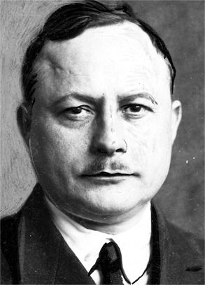

Strona główna > Historia
Powstanie Oddziału

Prof.Inż. Alfons Hoffman
Stowarzyszenie Elektrotechników Polskich powstało w Toruniu 27 lutego 1921 roku. 88 lat temu jedenastu
inżynierów uchwaliło przyjęcie ustaw i przyłączenie się do Stowarzyszenia Elektrotechników Polskich w
Warszawie,
które powstało 7 czerwca 1919 roku. Przewodniczącym zarządu został wybrany inżynier Alfons Hoffmann. Wśród
zebranych znajdowali się dyrektorzy elektrowni w Toruniu, Grudziądzu i Tczewie.
Jacy byli nasi poprzednicy w Stowarzyszeniu? Tadeusz Konwicki powiedział, że "nie możliwe jest przekazanie
klimatu myślowego, moralnego, nastroju jakiegoś czasu, jakiejś generacji. Czas, w którym dominuje dana
generacja
ma swoją nerwicę, swoją psychozę, swój sposób patrzenia, oceniania, zachowania się. To odgrywa ogromną rolę w
historii, ale nie jest przez historyków dostrzegane."
Protokoły z toruńskich zebrań Stowarzyszenia z okresu II Rzeczypospolitej zachowały się i są przechowywane w
Archiwum Historycznym Elektroenergetyki Polskiej w Zakładzie Energetycznym w Toruniu. Są one dla nas jedynym
śladem pracy pierwszych członków Stowarzyszenia w Toruniu oraz dokumentem ich działalności. Kraj, w którym
powstało Stowarzyszenie Elektrotechników Polskich był równie młody, jak i ono. Skutki wieloletnich podziałów
zaborczych trwały. Organizacja administracyjna, przemysł, komunikacja i zniszczenia wojenne pochodziły z
trzech
państw. Teraz miały one dać początek trudnej budowie II Rzeczypospolitej.
Gospodarczo i komunikacyjnie jeszcze podzielony kraj miał niewielki lecz rozwijający się przemysł
elektrotechniczny. Alfons Hoffmann w swoim artykule w "Słowie Pomorskim" z dnia 30 marca 1924 roku podaje spis
pokaźnej ilości ówczesnych fabryk elektrotechnicznych w Polsce. W Toruniu w branży elektrotechnicznej działały
w
okresie II Rzeczypospolitej przedsiębiorstwo tramwajów, niewielka sieć telefoniczna, a w późniejszym okresie -
radiostacja średniofalowa. Uliczne i domowe oświetlenie gazowe było wypierane przez oświetlenie elektryczne.
Doceniano znaczenie elektryfikacji dla rozwoju gospodarczego kraju. W tym samym numerze "Słowa Pomorskiego"
inny
artykuł Alfonsa Hoffmanna pt. Elektryfikacja Polski a szczególnie Pomorza" zasługuje po 77 latach na szacunek
inżynierskiej wiedzy i rzetelności oraz przenikliwości przewidywań.
Stowarzyszenie w Toruniu w okresie II Rzeczypospolitej
Koło Toruńskie Stowarzyszenia jako pierwsze na Pomorzu w roku 1921 liczyło 11 członków, a w 1938 roku ( już od
1928 roku jako Oddział) - 39 członków, wybranych elektryków o wykształceniu co najmniej średnim technicznym
lub
po gimnazjum. W Kole większość członków było pracownikami Pomorskiej Elektrowni Krajowej "Gródek" - elektrowni
wodnej w Gródku nad Wdą. Prezes Koła, inż. Alfons Hoffmann , był kierownikiem budowy, a następnie dyrektorem
tej
elektrowni.
Na utworzenie i uformowanie Koła, a później Oddziału decydujący wpływ miał Alfons Hoffmann, wybitny elektryk,
organizator i działacz społeczny.
Potrzeby i problemy budującego się państwa były żywe w Oddziale. Dyskutowano i opiniowano nowe polskie
słownictwo elektryczne, Polskie Normy, Ustawę Elektryczną, organizację Inspekcji Elektrycznej, interweniowano
przeciwko zniesieniu Referatu Elektryfikacji w Urzędzie Wojewódzkim w Toruniu. W roku 1921 deklarowano
pogotowie
inżynierów, którzy na wezwanie Komitetu Górnego Śląska z Rzeczypospolitą gotowi byli pojechać na
kilkutygodniowe
zastępstwo elektryków walczących w Powstaniu Śląskim.
W roku 1938 prezes Hoffmann informował "o znacznym zapotrzebowaniu na inżynierów dla lotnictwa i dla przemysłu
wojennego".
Zainteresowania techniczne Oddziału były związane głównie z elektrowniami wodnymi, lecz słuchano również
prelekcji z dziedziny grzejnictwa elektrycznego, elektryfikacji Kościerzyny, a w roku 1935 referatu inż..
Alfonsa Hoffmanna o przemianach organizacyjnych w niemieckich organizacjach technicznych.
Koło wykonywało szereg prac dla całego Stowarzyszenia. W roku 1921 zorganizowano II Ogólnopolski Zjazd
Elektrotechników, w 1928 roku VII Zjazd Delegatów SEP, oraz Walne Zgromadzenie Członków Związku Elektrowni
Polskich. W roku 1938 Oddział Toruński wspólnie z Oddziałem Wybrzeża Morskiego były "gospodarzami na lądzie" w
Gdyni X Walnego Zjazdu SEP na statku MS "Piłsudski" w czasie podróży z Gdyni do Sztokholmu.
Prezesami Oddziału w latach II Rzeczypospolitej byli następujący koledzy:
- w latach 1921 - 1930 oraz 1937 - 1938 Alfons Hoffmann
- w latach 1930 - 1933 Jerzy Krokos
- w latach 1933 - 1934 Stanisław Gieszczykiewicz
- w latach 1934 - 1935 Janusz Zembrzycki
- w latach 1935 - 1936 Kazimierz Kopecki
- w latach 1936 - 1937 Kazimierz Jeleński
- od roku 1938 do końca II Rzeczypospolitej Hubert Karbowski
W roku 1938 Alfons Hoffmann został wybrany prezesem Stowarzyszenia Elektryków Polskich.
Ostatni zachowany protokół pochodzi z zebrania z dnia 19 listopada 1938 roku, które zakończono o godzinie
20.25
. Referat "Współpraca większych elektrowni" wygłosił kol. Kopecki, przewodniczył zebraniu prezes Karbowski.
Stowarzyszenie w Toruniu w okresie Polski Ludowej
Nową formą organizacyjną Stowarzyszenia stały się koła zakładowe działające na terenie zakładów
państwowych.
Do roku 1975 działało w Toruniu 10 kół Stowarzyszenia Elektryków Polskich, które wchodziły w skład Oddziału
Bydgoskiego SEP, a ich powstanie było wynikiem rozwoju przemysłu i techniki w dziedzinie elektryki w Toruniu.
W wyniku reorganizacji państwa 24 sierpnia 1975 roku Zarząd Główny SEP uchwalił powstanie Oddziału Toruńskiego
SEP, którego I Walne Zgromadzenie Delegatów odbyło się 29 października tegoż roku. Do Oddziału Toruńskiego
przyłączyło się 6 Kół z Grudziądza. Do dzisiaj przetrwało tylko najstarsze, powstałe w roku 1949 - Koło
Terenowe
- związane z energetyką grudziądzką.
Po powstaniu Oddział zrzeszał 607 członków w 16 kołach. Do końca 1977 roku liczba kół wzrosła do 31, a liczba
członków do 1044 osób. W nowym Województwie Toruńskim powstawały koła w innych miastach. W Brodnicy Koło
Terenowe do dzisiaj aktywnie działa w środowisku elektryków.
W Oddziale powstało w drugiej połowie lat siedemdziesiątych siedem sekcji naukowo-technicznych w dziedzinach
energetyki, przemysłu elektromechanicznego, elektroniki, instalacji i urządzeń, telekomunikacji, oraz maszyn
cyfrowych. Powstało również 16 komisji problemowych dla poszczególnych form działań statutowych Oddziału.
Prezesami Oddziału w tym okresie byli:
- w latach 1975 - 1987 Kazimierz Strześniewski
- w latach 1987-1990 Jerzy Krauze
Stowarzyszenie w Toruniu w okresie III Rzeczypospolitej
Procesy transformacji ustrojowej kraju spowodowały zmiany w przemyśle naszego regionu, który dostosował
się do
potrzeb rynku zmieniając technologie oraz asortyment produkcji.
Rozwinęła się forma pokazów firmowych połączonych z prelekcjami o wyrobach przemysłowych, a także prelekcji i
pokazów filmowych o różnorodnej tematyce, np. o prawie energetycznym. Nadal trwają szkolenia z zakresu
eksploatacji i dozoru urządzeń, instalacji i sieci, kursy komputerowe oraz szkolenia z zakresu zastosowania
elektryki w górnictwie, układów napędowych, aparatury łącznikowej.
Szereg działań Oddziału wykracza poza środowisko elektryków toruńskich. W roku 1995 Oddział zorganizował w
Toruniu i Przysieku spotkanie wszystkich prezesów Oddziałów SEP w Polsce, a także wziął udział w pracach nad
nowym statutem SEP uchwalonym w 1996 roku przez XXVIII Nadzwyczajny Walny Zjazd Delegatów SEP.
W roku 1996 Oddział Toruński zorganizował wspólnie z Oddziałem Gliwickim sympozjum dotyczące wykorzystania
nowoczesnej aparatury elektrycznej w górnictwie.
Prezesami Oddziału w latach III Rzeczypospolitej byli następujący koledzy:
- w latach 1990- 1994 Jerzy Krauze
- w latach 1994 - 1998 Maciej Grączewski
- w latach 1998 - 2006 Jan Bartoszyński
- od roku 2006 Aleksandra Konklewska